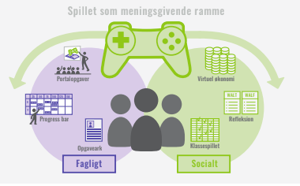

I praksis foregår det på den måde, at eleverne spiller et svært computerspil, der kræver, at de samarbejder. De har brug for læreren som guide og vejleder, og at de har brug for deres faglige kompetencer.
Elerverne bliver altså
bedre studerende af at spille. Til dette formål vælges altid gode og komplekse kommercielle computerspil, og ikke deciderede læringsspil. Udoverver den traditionelle undervisning arbejdes der i klassen også med 'Portalopgaver', der
binder det faglige stof og computerspillet sammen. Det bliver på den måde tydeligt for eleverne, hvordan de faglige kompetencer de alligevel skal tilegne sig, kan give dem en fordel i spillet.
